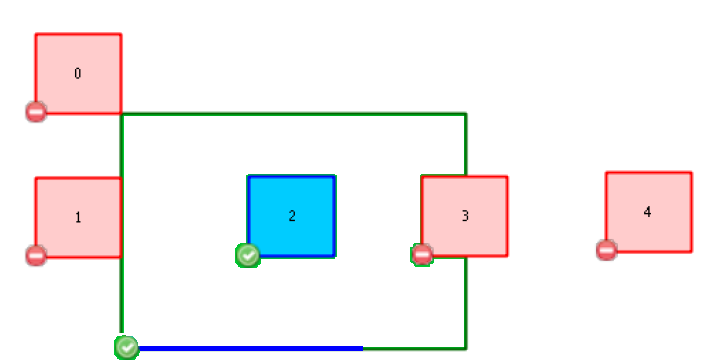

Todas las geometrias de la capa de origen de la regla deben estar cubiertas por al menos una geometria de la capa de destino. Esta relación es más inclusiva que la de la regla "debe estar contenida en una geometria", puesto que también considera las geometrias contenidas en el borde de otra geometría (por ejemplo, líneas contenidas en el anillo exterior de un polígono, o puntos coincidentes con los extremos de una polilínea).
